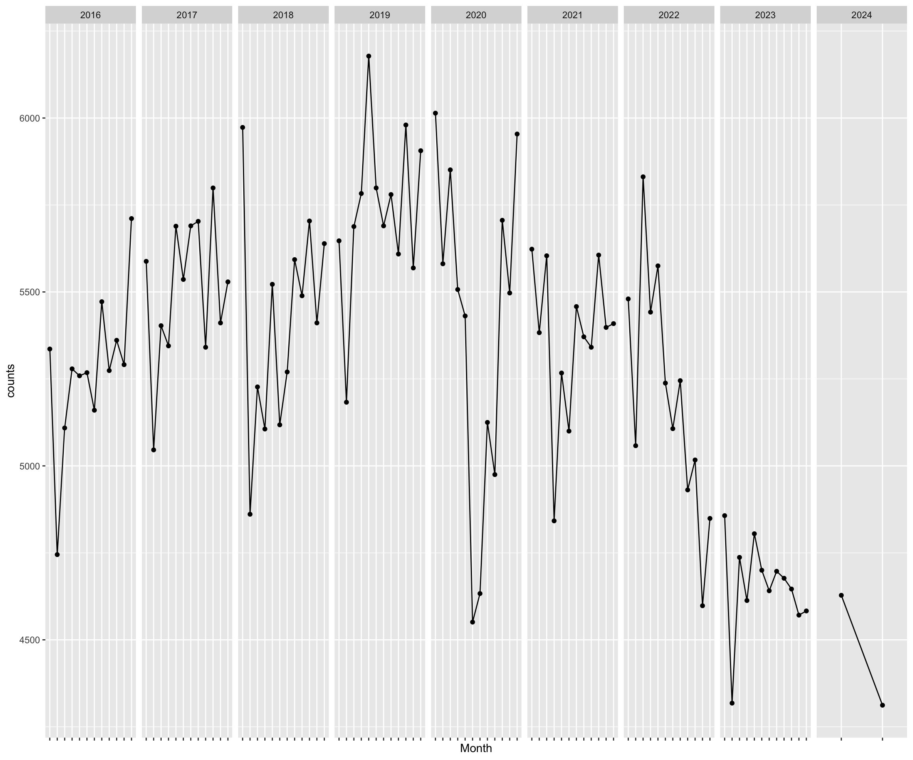
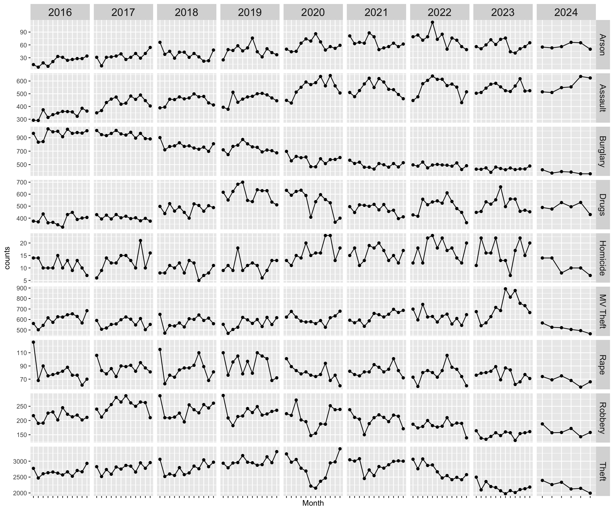

In a separate post, I discuss what is currently going on with crime in Phoenix.
Here, I want to urther unpack the trends by focusing on crime types.
Note: as with other posts, just click the tab to see the code…
Let’s pull the most recent data for crime incidents from the site.
The data are reported as UCR crime classifications and have geographic information (block address, zip) as well as the date and time of the incident. As of April, 2024, there were 534,851 crime incidents with complete data from 11/2015 to within a week of the current date.
Let’s start by looking at the monthly count of incidents over all crime types.

Now, let’s break down the figure above by crime type:

library( dplyr )
library( tidyr )
library( ggplot2 )
library( forecast )
library( gridExtra )
# Get the data.
url <- "https://www.phoenixopendata.com/dataset/cc08aace-9ca9-467f-b6c1-f0879ab1a358/resource/0ce3411a-2fc6-4302-a33f-167f68608a20/download/crime-data_crime-data_crimestat.csv"
crime.data <- read.csv( url, as.is = TRUE, header = TRUE )
crime.data <- na.omit( crime.data )
# Clean up the dates.
date.vec <- strptime( crime.data$OCCURRED.ON, format="%m/%d/%Y %H:%M" )
crime.data$year <- format( date.vec, format="%Y" )
crime.data$month <- format( date.vec, format="%B" )
# Drop cases for the most recent month.
crime.data <- crime.data[ ! (
crime.data$month == format( Sys.Date(), format="%B" ) &
crime.data$year == format( Sys.Date(), format="%Y" )
) , ]
# Crimes by month.
crimes.by.month <-
crime.data %>%
select( year, month ) %>%
filter( year != 2015 ) %>%
filter( !is.na( year ) ) %>%
group_by( year, month ) %>%
summarize( counts = n() ) %>%
arrange( match( month, month.name ) )
crimes.by.month$month <-factor( crimes.by.month$month,levels = month.name )
crimes.by.month$month <-factor( month.abb[crimes.by.month$month],levels = month.abb )
# Create crimes by type by month object.
crimes.type.by.month <-
crime.data %>%
select( year, month, UCR.CRIME.CATEGORY ) %>%
filter( year != 2015 ) %>%
filter( !is.na( year ) ) %>%
group_by( year, month, UCR.CRIME.CATEGORY ) %>%
summarize( counts = n() ) %>%
arrange( match( month, month.name ) ) %>%
select( !month ) %>%
mutate(crime.type = case_when(
UCR.CRIME.CATEGORY == "AGGRAVATED ASSAULT" ~ "Assault",
UCR.CRIME.CATEGORY == "ARSON" ~ "Arson",
UCR.CRIME.CATEGORY == "BURGLARY" ~ "Burglary",
UCR.CRIME.CATEGORY == "DRUG OFFENSE" ~ "Drugs",
UCR.CRIME.CATEGORY == "LARCENY-THEFT" ~ "Theft",
UCR.CRIME.CATEGORY == "MURDER AND NON-NEGLIGENT MANSLAUGHTER" ~ "Homicide",
UCR.CRIME.CATEGORY == "MOTOR VEHICLE THEFT" ~ "MV Theft",
UCR.CRIME.CATEGORY == "RAPE" ~ "Rape",
UCR.CRIME.CATEGORY == "ROBBERY" ~ "Robbery" ) )
crimes.type.by.month$month <-factor( crimes.type.by.month$month,levels = month.name )
crimes.type.by.month$month <-factor( month.abb[crimes.type.by.month$month],levels = month.abb )p1 <- crimes.by.month %>%
ggplot( aes( month, counts, group = 1 ) ) +
geom_point( ) +
geom_line( ) +
facet_grid( ~ year , scales="free" ) +
theme( axis.text.x=element_blank() ) +
xlab( "Month" )
p1
p2 <- crimes.type.by.month %>%
ggplot( aes( month, counts, group = 1 ) ) +
geom_point( ) +
geom_line( ) +
facet_grid( crime.type ~ year, scales="free" ) +
theme( axis.text.x=element_blank(),
strip.text.x = element_text( size = 15 ),
strip.text.y = element_text( size = 12 ) ) +
xlab( "Month" )
p2Back to Open Criminology Phoenix page
Please report any needed corrections to the Issues page. Thanks!